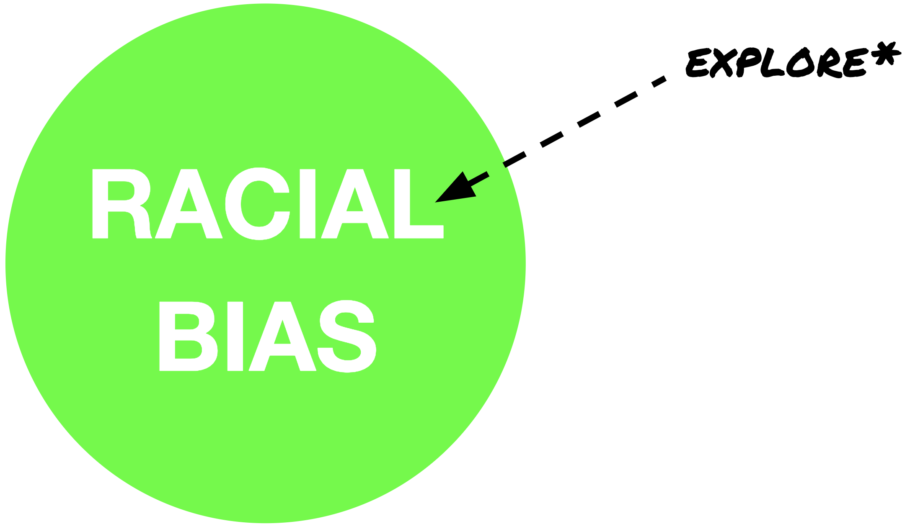

The Bias in Bias
Anubhav Arora . Nava Haghighi
Final Project for MIT 6.894
The goal of this project is to let you explore racial bias, specifically preference for Black/African American or White/Caucasian, in the United States.

For our visualizations, we are using the data collected through the Harvard Implicit Association Test* (IAT) from 2008-2018. Let's get to work!
*Although the accuracy of the test has been questioned, it is still the most commonly used method for measuring implicit bias.